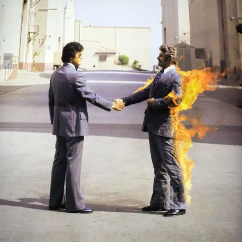

Stunt performer set ablaze for cover artwork of Pink Floyd album dies aged 88
2025, August 19

Stunt performer set ablaze for cover artwork of Pink Floyd album dies aged 88
2025, August 19
United States
On August 12, Ronnie Rondell Jr., the stunt performer best known for appearing as the man set ablaze on the front cover artwork of English rock band Pink Floyd's 1975 studio album Wish You Were Here, died at an assisted living facility in Osage Beach, Missouri. His death was announced by his family on a funeral home website on August 17. His cause of death was not specified. He was 88 years old.Rondell was born in 1937. He graduated North Hollywood High School before enlisting in the US Navy, where he excelled at scuba diving and mining. He later began working as a stunt double for films and television. Some of his stunts included gymnastics and hang gliding.
Most notably in 1975, he appeared engulfed in flames on Pink Floyd's album cover alongside another stunt performer. The photo was to give the interpretation of one music business executive getting "burned" by another executive in a business dealing.
The photoshoot was done in the Warner Bros. lot in Burbank. Fifteen pictures were taken in total. Despite wearing fire retardant underneath his business suit, on the final picture Rondell's mustache was disintegrated during the photoshoot, and his face was burned due to the wind. He reportedly "threw himself on the ground" and required the crew to throw blankets on him. Aubrey Powell, the photographer hired for the shoot, recalled in 2020 that Rondell said: "That's it! I'm done!" Powell said: "I knew I had got a special picture. It took a long time to persuade Ronnie to stand exactly as I wanted but in the end he was very brave and it was a perfect composition."
He sustained numerous injuries throughout his career, including but not limited to concussions and broken ribs. He was quoted saying: "You never told anyone you were hurt because they always had another guy that could fit the clothes." He retired in 2000.
Other films he was involved with include Lethal Weapon, Thelma And Louise, Batman & Robin, Twister and Star Trek: First Contact. His final credit was in 2003's The Matrix Reloaded, in which he came out of retirement to film a car chase scene.
Rondell left behind a wife of 56 years and a son. Another son of his, who also worked as a stunt double, died in 1985 aged 22 in a helicopter accident while attempting an aviation stunt.